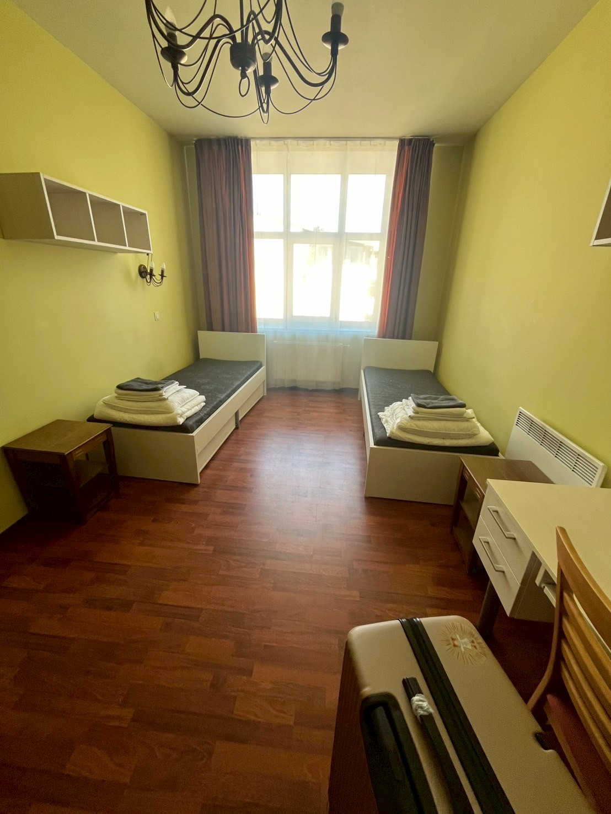
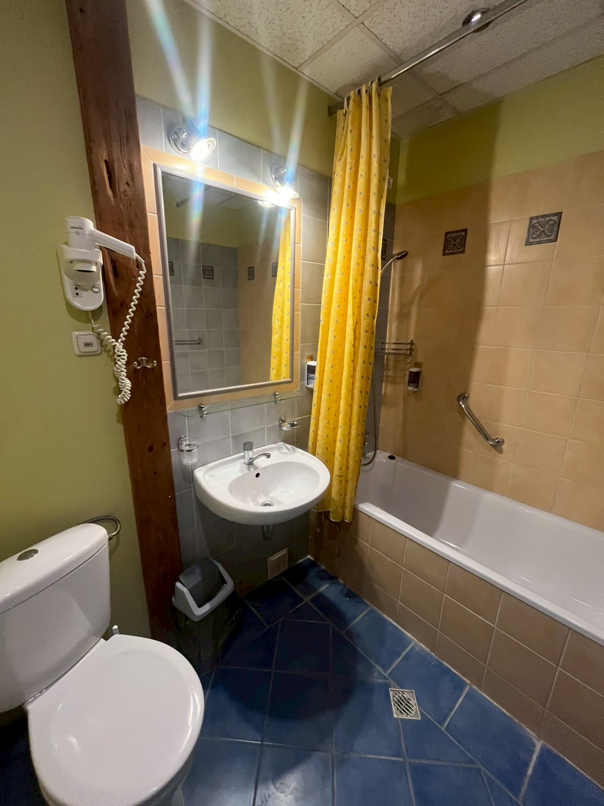
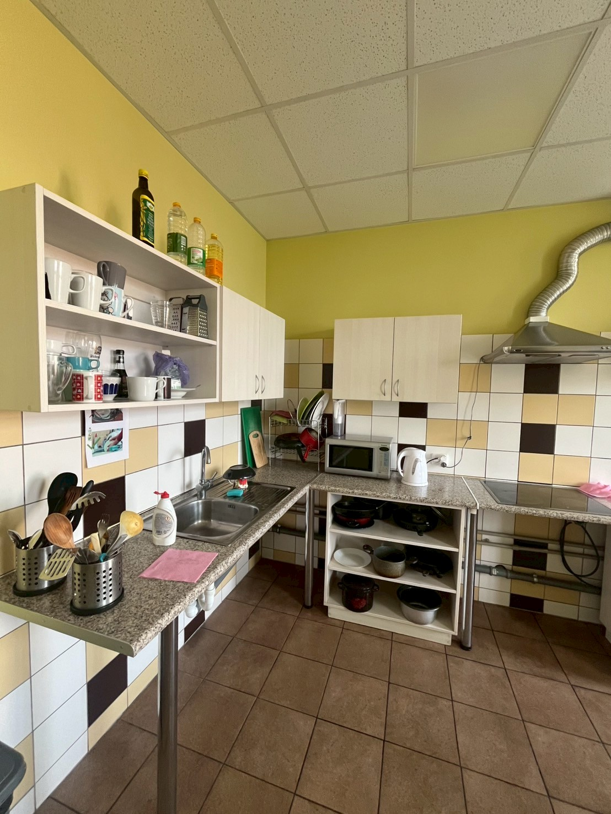

Skolas寮
skolas寮はリガ工科大学が提供する大学寮の一つです。
◆ 寮費（2024年時点）
• 1人部屋：477€（約78,390円／1€=164.34円で計算）
• 2人部屋：323€（約53,081円）
※光熱費込み
※保証金200€（退寮時に返金）
◆ 寮の設備
◉ 建物の構造
• 3階に受付と寮母さんの部屋があります。
• 4〜7階が居住フロア。エレベーターは5階までで、6・7階は階段を使います。
◉ 部屋
• 冷蔵庫は各部屋に1台ずつあります。
• 1人部屋は元々2人部屋を1人で使う形なので、ベッドや机などは2つずつあります。
• 清掃は週1回入り、シーツ交換・掃除機がけ・トイレ掃除などをしてくれます。
• お風呂はバスタブ＋シャワータイプ。
• エアコンは入居時かなり汚れていたので、自分で掃除しました。
• 最初は部屋の清潔さに少し気になる点がありましたが、すぐに生活できる程度で、特別汚いというわけではありませんでした。なお、学期開始前の滞在期間中は清掃がありませんでした。
• コンセントはCタイプのみ対応です。


◉ キッチン
• 5階と6階に共有キッチンがあります。基本的な調理器具は揃っていて、共同で使用できます。平日の朝に清掃が入ります。
◉ 洗濯機
• 6階のキッチン内に洗濯機が1台設置されています（乾燥機なし）。ネットでカード決済して使います。
• 同じ階に洗濯物を干す部屋もあり、特に混雑は感じませんでした。

• 治安がとても良い場所にある。リガの中でもかなり安全なエリアだと感じました。
• スーパーが徒歩10分圏内に3つ以上。遅いところでは23時まで営業しています。
• 立地がよく、「センター地区」にあり、飲食店も多く、リガの主要スポットへは徒歩で行けます。
• 冬でも安心。**暗くなるのが早いですが、周辺の道はほとんどライトアップされていて明るいです。
• 学校までのバス停まで徒歩5分。通学も便利です。
• セキュリティがしっかりしていて安心。カードキーを3回使う構造になっています。
• 一人部屋でも孤独感なし。私は1人部屋でしたが、キッチンで他の学生と話せるので、ちょうどよい距離感でした。
◆ 注意点・気をつけたいこと
• 入寮日について
「24時間365日受付」と案内されていますが、実際に寮母さんがいるのは平日の10時〜18時ごろ（※正確ではない可能性あり）。
私は日曜午前に到着する予定で連絡していましたが、当日受付に人がいませんでした。
できれば**平日の日中（夕方まで）**の入寮をおすすめします。
• 最短契約期間は5ヶ月からです。
• 2人部屋を希望した場合、同じ国籍の人と相部屋になる可能性があります。 日本人同士で相部屋になることもあるので、気になる方は事前に確認した方が良いかもしれません。